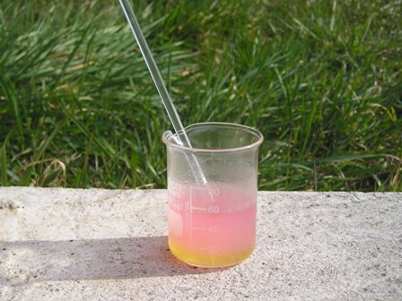

Anche se sono estimatore e goloso consumatore dei buoni olii di oliva italiani, non starò certo a tesserne le lodi in questa sede inappropriata; essa si presta ad "assaggiarlo", ma solo dal punto di vista chimico...
I controlli analitici dell'olio sono potenzialmente numerosissimi, determinando tanti di quei parametri che si può arrivare veramente conoscere tutto quello che si vuole sulla sua genuinità e quant'altro; io mi sono limitato solo alla semplicissima determinazione di uno dei fattori più importanti dal punto di vista organolettico: l'acidità libera.
Ma perchè l'olio può essere più o meno "acido"? Abbiamo visto l'altra volta che gli acidi non sono presenti allo stato libero, ma sotto forma di esteri della glicerina e quindi l'olio non dovrebbe essere "acido".
Succede però che in funzione della provenienza, della condizione delle olive alla raccolta, della loro conservazione prima della spremitura e dello stato di conservazione dell'olio stesso, una più o meno piccola parte dei trigliceridi tendono ad idrolizzarsi, staccando gli acidi grassi dalla glicerina ed aumentando l'acidità libera.
In questo caso l'idrolisi è esattamente la reazione opposta all'esterificazione: rivedendo il post 80, occorre leggere la reazione non da sinistra a destra ma viceversa:
estere + acqua --> acido + alcol, quindi:
trioleato di glicerile + acqua --> acido oleico + glicerina
(l'idrolisi non avviene così facilmente: non significa che mescolando olio e acqua si ottiene la reazione di cui sopra!)
Questa parziale idrolisi si esprime analiticamente in quantità di acido oleico libero, ed è in pratica l'acidità dell'olio, quella che quando è eccessiva lascia in gola una spiacevole sensazione di "ruvidità". Si dice anche che l'olio acido "raschia in gola".
Per pura curiosità avevo controllato tempo fa un campione di rinomato olio extravergine delle colline moreniche del Garda, commercialmente definito "a bassissima acidità"; recentemente per questo lavoro ho rifatto il test su un altro ottimo olio ma volutamente più "stagionato" (era da qualche mese in bottiglia chiusa ma non piena) andando a verificare, con un margine di errore tollerabile, le rispettive acidità.
Materiale occorrente:
- miscela 1:1 etanolo/etere resa perfettamente neutra alla fenolftaleina con qualche goccia di idrossido di potassio KOH
- soluzione di KOH 0,05 N
- sol. 1% di fenolftaleina
- buretta 5 ml
A 5 g esatti di olio vengono aggiunti in una beuta 50 ml della miscela alcool/etere, agitando fino a soluzione.
Si aggiungono poche gocce di fenolftaleina e si titola con KOH 0,05 N; la soluzione passa improvvisamente da incolora a persistente colorazione rosa allorchè tutto l'acido libero è stato salificato. 

Se n è il volume in ml consumato, l'acidità in oleico è espressa dalla formula:
% oleico = n x 0,282
ml di KOH consumati nelle due prove: 0,95 e 2,6
L'olio extravergine dovrebbe avere acidità inferiore all'1%; nel campione analizzato in precedenza avevo ottenuto un valore veramente basso di 0,27%, quindi soddisfacente pienamente i requisiti dichiarati, sia dal punto di vista organolettico (il più importante!) che da quello chimico.
Anche il secondo test, risultando un'acidità dello 0,73%, ha superato la prova pur essendo vecchiotto e conservato in condizioni non ottimali, ma si partiva sempre da un olio ottimo e di sicura provenienza.
Buon condimento a tutti!